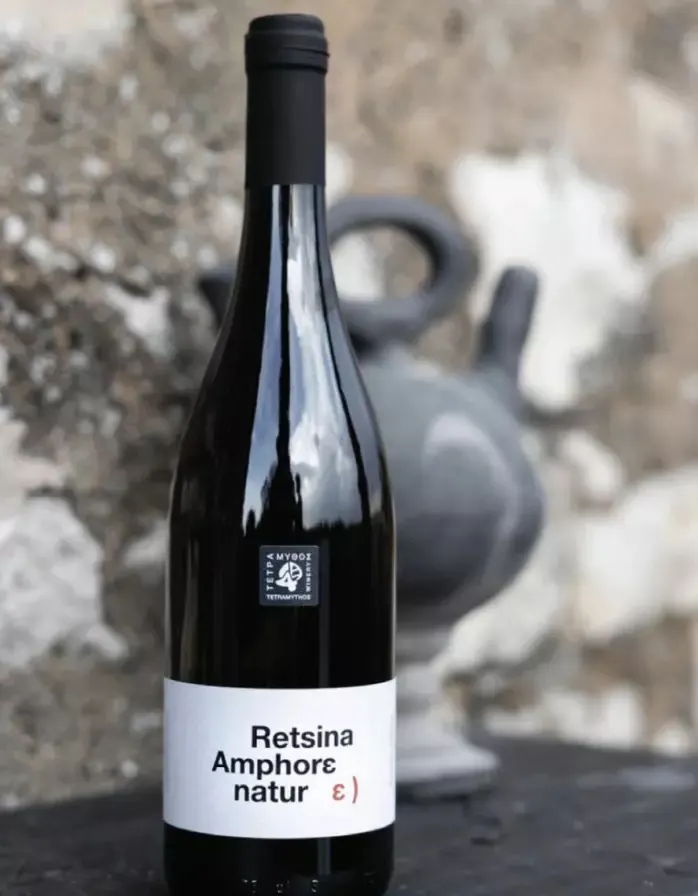
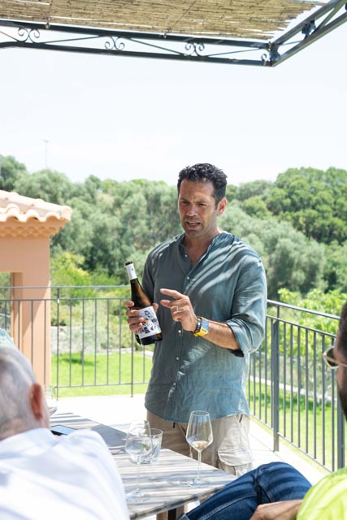
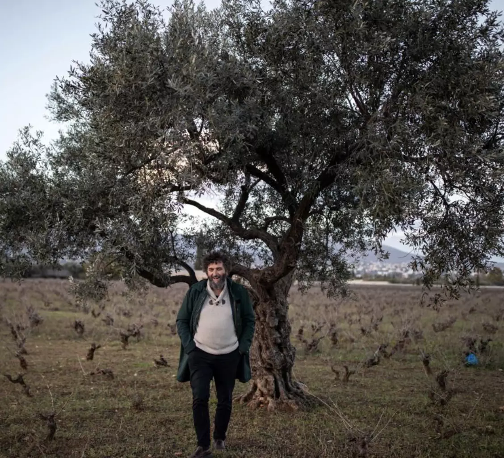
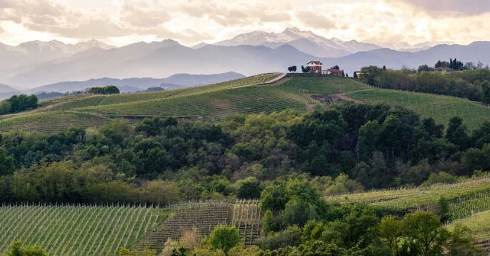

Tarifs
professionnels.2026.

Jérôme Becuwe et Christine Kieu ont quitté la gestion et la communication à Paris pour devenir vignerons sur les tuffeaux de Turquant. Cinq hectares en agriculture biologique sur le plateau argilo-calcaire de Montsoreau et Turquant, au-dessus de la Loire. Vendanges manuelles en petite caisse, tri sévère à la vigne et au chai, levures indigènes. Leurs blancs de Chenin fermentent lentement et longuement. Leurs Saumur-Champigny ignorent les tanins. Midi Minuit, l'effervescent, vieillit 18 mois sur lattes dans les caves à 12°.
| Cuvée | Appellation | Couleur | Mill. | Format | Caviste HT | Restaurant HT |
|---|---|---|---|---|---|---|
| Blancs | ||||||
| Les Heures Heureuses | Vin de France | Blanc | 2025 | 75 cl | 8,45 € | 9,30 € |
| Volte Face | Vin de France | Blanc | 2024 | 75 cl | 10,55 € | 11,60 € |
| Rouges | ||||||
| Rouge des Bois | Saumur-Champigny | Rouge | 2024 | 75 cl | 8,45 € | 9,30 € |
| Rouge des Bois | Saumur-Champigny | Rouge | 2024 | 150 cl | 18,20 € | 19,60 € |
| Un Monde Nouveau | Saumur-Champigny | Rouge | 2023 | 75 cl | 10,55 € | 11,60 € |
| Un Monde Nouveau | Saumur-Champigny | Rouge | 2023 | 150 cl | 23,30 € | 25,10 € |
| Rosé | ||||||
| Saisons, épisode II | Vin de France | Rosé | 2023 | 75 cl | 8,45 € | 9,30 € |
| Effervescent | ||||||
| Midi Minuit | Vin de France | Effervescent | 2023 | 75 cl | 10,65 € | 11,70 € |

Sur les pentes du mont Aroania, entre 600 et 1 050 mètres d'altitude, les vignes regardent le golfe de Corinthe. Le Roditis blanc et le Mavro Kalavrytino rouge sont deux cépages hyper-locaux qu'on trouve à peine en dehors de ce coin d'Égialie. Agriculture biologique, vinification naturelle.
| Cuvée | Appellation | Couleur | Mill. | Format | Caviste HT | Restaurant HT |
|---|---|---|---|---|---|---|
| Blancs | ||||||
| Retsina naturε, Amphore | App. Traditionnelle | Blanc | 2025 | 75 cl | 8,50 € | 9,35 € |
| Roditis naturε | AOP Patras | Blanc | 2025 | 75 cl | 9,70 € | 10,65 € |
| Malagousia naturε | IGP Péloponnèse | Blanc | 2025 | 75 cl | 10,50 € | 11,55 € |
| Muscat sec naturε | IGP Péloponnèse | Blanc | 2025 | 75 cl | 12,20 € | 13,40 € |
| Sauvignon blanc naturε | IGP Péloponnèse | Blanc | 2025 | 75 cl | 12,40 € | 13,65 € |
| Orange | ||||||
| Roditis orange naturε | AOP Patras Réserve | Orange | 2024 | 75 cl | 14,20 € | 15,60 € |
| Agrippiotis naturε | IGP Péloponnèse | Orange | 2024 | 75 cl | 14,80 € | 16,30 € |
| Rosé | ||||||
| Mavro Kalavrytino naturε | IGP Péloponnèse | Rosé | 2025 | 75 cl | 10,50 € | 11,55 € |
| Effervescent | ||||||
| Roditis bio, Pet Nat | AOP Patras | Effervescent | 2025 | 75 cl | 10,50 € | 11,55 € |
| Rouges | ||||||
| Mavro Kalavrytino naturε | IGP Péloponnèse | Rouge | 2025 | 75 cl | 9,50 € | 10,45 € |
| Agiorgitiko naturε | IGP Péloponnèse | Rouge | 2025 | 75 cl | 9,70 € | 10,65 € |
| Laurier noir naturε | IGP Péloponnèse | Rouge | 2024 | 75 cl | 14,00 € | 15,40 € |
| Phelloe naturε | IGP Péloponnèse | Rouge | 2023 | 75 cl | 14,80 € | 16,30 € |

Fondée en 2017 à Svoronata, sur la côte ionienne de Céphalonie, la winery de Panos Sarris a pour seule boussole le terroir de l'île. Le Robola pousse ici sur les pentes calcaires du mont Ainos à 700 mètres - une roche pauvre et drainante qui lui donne une minéralité tranchante et une fraîcheur que l'altitude seule peut offrir sous ce soleil. Vostilidi et Tsaoussi, cépages endémiques presque disparus, sont vinifiés avec la même rigueur : levures indigènes, biologique, petites séries. La mer, la pierre et le ciel - la philosophie du domaine résume le terroir mieux que n'importe quel cahier des charges.
| Cuvée | Appellation | Couleur | Mill. | Format | Caviste HT | Restaurant HT |
|---|---|---|---|---|---|---|
| Blancs | ||||||
| AOP Robola de Céphalonie | AOP Robola | Blanc | 2025 | 75 cl | 11,20 € | 12,30 € |
| AOP Robola, Cru "Epanohori" | AOP Robola | Blanc | 2024 | 75 cl | 14,30 € | 15,75 € |
| Avythos, Muscat sec | IGP Coteaux d'Ainos | Blanc | 2024 | 75 cl | 12,00 € | 13,20 € |
| Vostylidi | IGP Coteaux d'Ainos | Blanc | 2024 | 75 cl | 12,40 € | 13,65 € |
| Orange | ||||||
| Lygia | IGP Coteaux d'Ainos | Orange | 2024 | 75 cl | 11,20 € | 12,30 € |
| Rouges | ||||||
| Vardiola, Mavrodaphné | IGP Coteaux d'Ainos | Rouge | 2025 | 75 cl | 11,20 € | 12,30 € |
| Megali Petra, Mavrodaphné | IGP Coteaux d'Ainos | Rouge | 2024 | 75 cl | 12,40 € | 13,65 € |
Depuis 2015, Évriviadis Sclavos et Spiros Zisimatos travaillent en biodynamie sur la péninsule de Paliki, à l'ouest de Céphalonie. Vieilles vignes de 70 ans en moyenne, enracinées dans des calcaires, marnes et argiles blanches qui confèrent aux vins une acidité naturelle saisissante. Sclavos est le seul vigneron de l'île à vinifier les cépages autochtones en variétaux purs - Tsaoussi, Vostylidi, Zakynthino, des noms que la viticulture conventionnelle a longtemps ignorés. En 2021, Wine & Spirits Magazine a classé le domaine parmi les 100 meilleurs du monde.
| Cuvée | Appellation | Couleur | Mill. | Format | Caviste HT | Restaurant HT |
|---|---|---|---|---|---|---|
| Blancs | ||||||
| Tsaousi | IGP Coteaux d'Ainos | Blanc | 2022 | 75 cl | 14,30 € | 15,75 € |
A Trilofos, en Macédoine du Nord, Apostolos Thymiopoulos consacre ses 34 hectares à un seul cépage : le Xinomavro. Xino, l'acide. Mavro, le noir. Une variété à la structure tannique serrée, aux arômes d'épices et de fruits rouges secs, dont le potentiel de vieillissement rivalise avec les grands Nebbiolo du Piémont. En biodynamie depuis 2003, le domaine vinifie entre 100 et 400 mètres d'altitude au pied du mont Vermio. Terre et Ciel, la cuvée phare, tient facilement dix à vingt ans de garde.
| Cuvée | Appellation | Couleur | Mill. | Format | Caviste HT | Restaurant HT |
|---|---|---|---|---|---|---|
| Blancs | ||||||
| Assyrtiko, Jeunes vignes | IGP Macédoine | Blanc | 2023 | 75 cl | 9,50 € | 10,45 € |
| Blanc de coteaux, Cuvée Amphore | IGP Macédoine | Blanc | 2023 | 75 cl | 21,00 € | 23,10 € |
| Rosé | ||||||
| Rosé de Xinomavro | IGP Macédoine | Rosé | 2024 | 75 cl | 10,40 € | 11,45 € |
| Rouges — AOP Naoussa | ||||||
| Jeunes vignes de Xinomavro | IGP Macédoine | Rouge | 2024 | 75 cl | 9,50 € | 10,45 € |
| OenosNature | AOP Naoussa | Rouge | 2022 | 75 cl | 10,50 € | 11,55 € |
| Alta | AOP Naoussa | Rouge | 2024 | 75 cl | 12,00 € | 13,20 € |
| Xinomavro nature | AOP Naoussa | Rouge | 2024 | 75 cl | 12,20 € | 13,40 € |
| Terre et Ciel | AOP Naoussa | Rouge | 2023 | 75 cl | 16,00 € | 17,60 € |
| Terre et Ciel | AOP Naoussa | Rouge | 2023 | 150 cl | 38,00 € | 41,80 € |
| Aftorizo, Cru confidentiel | AOP Naoussa | Rouge | 2020 | 75 cl | 45,00 € | 49,50 € |
| Kaïafas, Cru confidentiel | AOP Naoussa | Rouge | 2020 | 75 cl | 45,00 € | 49,50 € |
| Vrana Petra, Cru confidentiel | AOP Naoussa | Rouge | 2019 | 75 cl | 60,00 € | 66,00 € |
| Rouges — AOP Rapsani | ||||||
| Terra Petra | AOP Rapsani | Rouge | 2020 | 75 cl | 14,00 € | 15,40 € |
| ATMA — Vin de négoce | ||||||
| ATMA blanc, Malagousia-Xinomavro | IGP Macédoine | Blanc | 2024 | 75 cl | 8,00 € | 8,80 € |
| ATMA rosé, Xinomavro | IGP Macédoine | Rosé | 2023 | 75 cl | 7,20 € | 7,90 € |
| ATMA rouge, Xinomavro | IGP Macédoine | Rouge | 2022 | 75 cl | 8,00 € | 8,80 € |
A Zitsa, à l'est de Ioannina en Épire, le cépage Debina donne un vin légèrement pétillant d'une vivacité et d'une fraîcheur que l'altitude et le calcaire seuls expliquent. Le domaine est aujourd'hui la référence de l'appellation, fondé en 1978 par Lefteris Glinavos de retour de formation à Bordeaux - l'un des premiers œnologues actifs de Grèce. Cave à 400 fûts de chêne français, unité de production de vins pétillants et semi-pétillants depuis 2009. Fine Debina et Poème de Nature sont des classiques du vignoble grec contemporain.
| Cuvée | Appellation | Couleur | Mill. | Format | Caviste HT | Restaurant HT |
|---|---|---|---|---|---|---|
| Blancs & Effervescents | ||||||
| Fine Debina | AOP Zitsa | Blanc | 2024 | 75 cl | 10,50 € | 11,55 € |
| Poème de Nature, Effervescent blanc | AOP Zitsa | Effervescent | 2024 | 75 cl | 10,50 € | 11,55 € |
| Poème de Nature, Effervescent rosé | AOP Zitsa | Effervescent Rosé | 2024 | 75 cl | 10,50 € | 11,55 € |
Troisième génération à Kali Sikia, dans l'arrière-pays de Rethymno, au sud-ouest de la Crète. Les vignes de Zoumberakis poussent entre 600 et 800 mètres sur les pentes du Krioneritis, dans un sol de schiste et d'argile rouge qui ralentit la maturité et préserve la fraîcheur naturelle. Vidiano, Liatiko, Kotsifali, Thrapsathiri : des cépages crétois ancestraux que l'agriculture biologique a ici sauvés de l'oubli. Leur Vidiano, blanc floral et tendu, est l'une des révélations du vignoble grec de ces dernières années.
| Cuvée | Appellation | Couleur | Mill. | Format | Caviste HT | Restaurant HT |
|---|---|---|---|---|---|---|
| Blancs | ||||||
| Vidiano nature | IGP Crète | Blanc | 2025 | 75 cl | 11,20 € | 12,30 € |
| Assyrtiko nature | IGP Crète | Blanc | 2024 | 75 cl | 13,90 € | 15,30 € |
| Rosé | ||||||
| Rosé Liatiko nature | IGP Crète | Rosé | 2024 | 75 cl | 10,40 € | 11,45 € |
| Rouges | ||||||
| Kotsyfali nature | IGP Crète | Rouge | 2025 | 75 cl | 12,00 € | 13,20 € |
| Liatiko, Vignes franches | IGP Crète | Rouge | 2023 | 75 cl | 16,00 € | 17,60 € |
L'île de Samos, dans la mer Égée face aux côtes turques, est entièrement vouée au Muscat Blanc à Petits Grains depuis l'Antiquité. Sur les pentes escarpées du mont Ampelos, jusqu'à 900 mètres d'altitude, des vignerons cultivent un terroir rocailleux et pauvre balayé par les vents marins. Domaine Nopera, distribué par OENOS, vinifie le Muscat en sec ou en passerillage avec une approche radicalement artisanale : fermentation naturelle sur levures indigènes, interventions minimales, longue maturation.
| Cuvée | Appellation | Couleur | Mill. | Format | Caviste HT | Restaurant HT |
|---|---|---|---|---|---|---|
| Blancs | ||||||
| Muscat nature Sélection, sec | IGP Mer Égée | Blanc | 2020 | 75 cl | 14,00 € | 15,40 € |
| Muscat Passerillage | IGP Mer Égée | Blanc | 2013 | 37,5 cl | 18,00 € | 19,80 € |
Île volcanique du nord de la mer Égée, Limnos est l'une des origines viticoles les plus anciennes de Grèce - Aristote lui-même mentionnait le Lemnia dans ses écrits. Sur un sol volcanique façonné par des millénaires de feux internes, deux cépages coexistent : le Muscat d'Alexandrie, blanc sec ou doux d'une grande richesse aromatique, et le Limnio, cépage rouge ancestral presque introuvable ailleurs. Savoglou et Tsivolas ont fondé leur domaine en 2002 pour redonner à l'île son identité viticole, en agriculture biologique.
| Cuvée | Appellation | Couleur | Mill. | Format | Caviste HT | Restaurant HT |
|---|---|---|---|---|---|---|
| Blancs | ||||||
| Muscat d'Alexandrie nature | AOP Limnos | Blanc | 2023 | 75 cl | 9,50 € | 10,45 € |
Sur l'île de Zakynthos, la Verdea est une appellation d'origine vénitienne - le nom désigne la teinte vert pâle du jus et la tradition de vendanges précoces. Dimitris Kefallinos vinifie depuis 2018 une mosaïque de six cépages indigènes de l'île, presque tous introuvables ailleurs, en fermentation spontanée sur levures indigènes et vieillissement en vieux fûts. Pas de filtration, soufre homéopathique. Séries limitées : entre 1 000 et 3 000 bouteilles par cuvée.
| Cuvée | Appellation | Couleur | Mill. | Format | Caviste HT | Restaurant HT |
|---|---|---|---|---|---|---|
| Blancs | ||||||
| Verdea nature | IGP Zakynthos | Blanc | 2024 | 75 cl | 14,30 € | 15,75 € |
| Pateras, Cuvée ancestrale, Solera | IGP Zakynthos | Blanc | 2018-24 | 75 cl | 20,50 € | 22,55 € |
| Rouges | ||||||
| Avgoustiatis nature | IGP Zakynthos | Rouge | 2022 | 75 cl | 14,30 € | 15,75 € |
Le Dr Vasilis Vaimakis est l'un des œnologues les plus reconnus de Macédoine du Nord. Après des décennies de conseil aux meilleurs domaines grecs, il a fondé sa propre micro-exploitation à Naoussa pour pousser une conviction jusqu'au bout : le Xinomavro peut être vinifié sans soufre ajouté sans rien sacrifier de la précision ni de la capacité de vieillissement. Mater Natura est le nom de cette série de vins zéro soufre - nets, équilibrés, rendements bas de 30 à 40 hl/ha.
| Cuvée | Appellation | Couleur | Mill. | Format | Caviste HT | Restaurant HT |
|---|---|---|---|---|---|---|
| Effervescent | ||||||
| Pet nat, Debina, N 19 | IGP | Effervescent | 2022 | 75 cl | 14,30 € | 15,75 € |
| Blancs | ||||||
| Blanc de noir, Xinomavro, N 9 | IGP | Blanc | 2021 | 75 cl | 12,40 € | 13,65 € |
| Rosé | ||||||
| Xinomavro, Kokkineli, Rosé N 12 | IGP | Rosé | 2021 | 75 cl | 13,50 € | 14,85 € |

La famille Georgas cultive en agriculture biologique le Savatiano dans la plaine de la Mesogia, en Attique, à quelques kilomètres d'Athènes. C'est ici, sur ce plateau argilo-calcaire, que la Retsina est née - une pratique vinaire de trois millénaires, longtemps décriée par l'Occident, aujourd'hui réhabilitée par une nouvelle génération de vignerons exigeants. Une touche légère de résine de pin d'Alep, introduite pendant la fermentation, donne aux vins leur signature unique : une fraîcheur résineuse qui n'écrase jamais le fruit.
| Cuvée | Appellation | Couleur | Mill. | Format | Caviste HT | Restaurant HT |
|---|---|---|---|---|---|---|
| Blancs | ||||||
| Retsina biologique | IGP Attique | Blanc | 2022 | 75 cl | 11,00 € | 12,10 € |
Kranidi est un port de l'Argolide, sur la côte nord-est du Péloponnèse, baigné par les vents de la mer Égée. Son appellation AOP pour l'huile d'olive extra vierge est l'une des plus reconnues de Grèce. La variété Manaki, à petits fruits et à faible teneur en acide oléique, donne une huile d'une finesse et d'une douceur caractéristiques. Récolte manuelle, première pression à froid, acidité inférieure à 0,5%.
| Cuvée | Appellation | Couleur | Mill. | Format | Caviste HT | Restaurant HT |
|---|---|---|---|---|---|---|
| Huile d'olive extra vierge | AOP Kranidi | Huile d'olive | 2024 | 5 L | 77,00 € | 84,70 € |
Juan Muñoz et Vicente Inat ont fondé en 2015 leur domaine à Moclinejo, dans l'Axarquía de Málaga, pour défendre un terroir spectaculaire : des vignes centenaires accrochées à des pentes de 40 à 60 %, entre 400 et 900 mètres d'altitude, sur un sol de schiste sombre. Le Moscatel de Alejandría y pousse depuis l'époque phénicienne - l'une des lignées génétiques de vigne les plus anciennes qui soient. Viticulture régénérative, vinification ancestrale sans intrants modernes.
| Cuvée | Appellation | Couleur | Mill. | Format | Caviste HT | Restaurant HT |
|---|---|---|---|---|---|---|
| Blancs | ||||||
| La Raspa Blanca | DO Sierras de Málaga | Blanc | 2024 | 75 cl | 9,00 € | 9,90 € |
| Filitas y Lutitas | DO Sierras de Málaga | Blanc | 2022 | 75 cl | 14,20 € | 15,60 € |
| Rouges | ||||||
| La Raspa Tinto | DO Sierras de Málaga | Rouge | 2023 | 75 cl | 10,00 € | 11,00 € |
| Magnetico | DO Sierras de Málaga | Rouge | 2022 | 75 cl | 14,20 € | 15,60 € |
| El Camaleon | DO Sierras de Málaga | Rouge | 2022 | 75 cl | 17,80 € | 19,60 € |
Mario Rovira est l'une des figures montantes de la viticulture espagnole naturelle. Formé à l'œnologie à Tarragone, il affine sa pratique à Sancerre, en Nouvelle-Zélande, puis chez Jean-Claude Berrouet à Château La Fleur-Petrus à Pomerol. En revenant en Espagne, il choisit le Bierzo pour ses vieilles vignes de Mencía sur des sols d'ardoise noire, et achète 3 hectares face à la mer en Alella, en Catalogne, en 2017. Fermentations spontanées lentes et fraîches, soufre minimal.
| Cuvée | Appellation | Couleur | Mill. | Format | Caviste HT | Restaurant HT |
|---|---|---|---|---|---|---|
| Blancs | ||||||
| Tosca | IGP Cadiz | Blanc | 2023 | 75 cl | 12,40 € | 13,65 € |
| Rouges | ||||||
| Chano Vilar | DO Bierzo | Rouge | 2011 | 75 cl | 14,00 € | 15,40 € |
Fondée en 2003 dans la vallée de Marga Marga, Carolina Alvarado et Arturo Herrera ont posé les bases du vin naturel chilien. Sur 1,5 hectare de vignes en culture sèche, sans irrigation, sur des sols de quartz et d'argile proches du Pacifique, ils produisent des vins sans aucun intrant : zéro soufre, zéro additif. Leur cave a été construite de leurs mains en adobe, à partir de l'argile de leurs propres parcelles. Les cépages ancestraux País et Muscat Rosada y côtoient le Pinot Noir et le Chardonnay.
| Cuvée | Appellation | Couleur | Mill. | Format | Caviste HT | Restaurant HT |
|---|---|---|---|---|---|---|
| Blancs | ||||||
| Oro blanco, Chardonnay | Valle Marga-Marga | Blanc | 2017 | 75 cl | 9,50 € | 10,45 € |
| La Zaranda, Sauvignon blanc | Valle Marga-Marga | Blanc | 2018 | 75 cl | 9,90 € | 10,90 € |
| Natural blanco, Sauvignon blanc | Valle Marga-Marga | Blanc | 2018 | 75 cl | 9,90 € | 10,90 € |

A Boca, dans le nord du Piémont, les vignes de Davide Carlone poussent sur les vestiges d'un supervolcan - la Valsesia - à 380-450 mètres d'altitude, que les Alpes surplombent à l'horizon. 11 hectares en biologique consacrés pour l'essentiel au Nebbiolo (85 %) et à la Vespolina (15 %), assemblés selon la tradition du Boca DOC et vieillis 24 mois en grandes barriques de Slavonie. L'Alto Piemonte, longtemps dans l'ombre de Barolo et Barbaresco, connaît aujourd'hui une renaissance portée par des vignerons comme Carlone.
| Cuvée | Appellation | Couleur | Mill. | Format | Caviste HT | Restaurant HT |
|---|---|---|---|---|---|---|
| Rosé | ||||||
| Colline Novaresi, Albarossa | DOC Colline Novaresi | Rosé | 2024 | 75 cl | 10,50 € | 11,55 € |
| Rouges | ||||||
| Colline Novaresi, Vespolina | DOC Colline Novaresi | Rouge | 2024 | 75 cl | 12,80 € | 14,10 € |
| Colline Novaresi, Nebbiolo | DOC Colline Novaresi | Rouge | 2023 | 75 cl | 12,80 € | 14,10 € |
| Colline Novaresi, Croatina | DOC Colline Novaresi | Rouge | 2020 | 75 cl | 12,80 € | 14,10 € |
| Boca | DOC Boca | Rouge | 2020 | 75 cl | 22,50 € | 24,75 € |
3 hectares plantés en 2015 dans le sud de l'Aveyron sur des schistes d'altitude entre 300 et 450 mètres. Un terroir frais et minéral où le Fer Servadou - appelé Mansois ici - retrouve son expression la plus directe : acidité vive, fruits rouges sauvages, poivre. Le Prunelard, ancien cépage gascon presque disparu, y est vinifié en rouge tendu. Le Mauzac, natif du Massif Central, en blanc aromatique. Agriculture biologique, vinification naturelle.
| Cuvée | Appellation | Couleur | Mill. | Format | Caviste HT | Restaurant HT |
|---|---|---|---|---|---|---|
| Rouges | ||||||
| Fer ou Braucol | IGP Aveyron | Rouge | 2022-23 | 75 cl | 8,50 € | 9,35 € |
| Prunelard | IGP Aveyron | Rouge | 2022 | 75 cl | 9,00 € | 9,90 € |
| Allez Hop | IGP Aveyron | Rouge | 2021 | 75 cl | 6,50 € | 7,15 € |
| Cuvée Rafael | IGP Aveyron | Rouge | 2022 | 75 cl | 9,00 € | 9,90 € |
0,78 € par bouteille. Tous les prix sont hors taxes, départ cave.